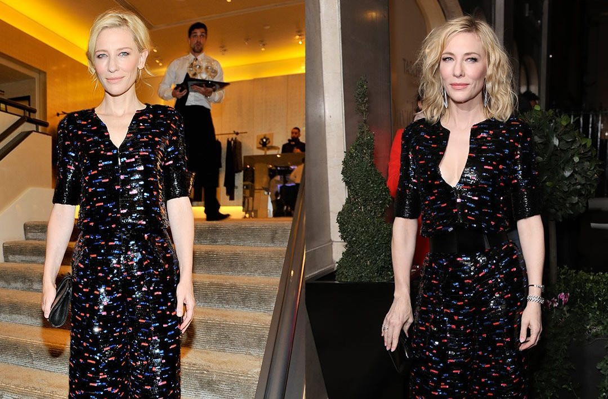

ELEGANCIA SOSTENIBLE
Una característica distintiva de la elegancia de Cate Blanchett es su tendencia a reutilizar prendas y accesorios en diferentes alfombras rojas.
Por ejemplo, ha combinado el mismo vestido o joyería en distintos festivales y ceremonias, siempre creando looks únicos y sofisticados.
Esta práctica refleja su compromiso con la moda sostenible y su creatividad para mantener el glamour sin desperdicio, inspirando a la industria y a los fans por igual.
